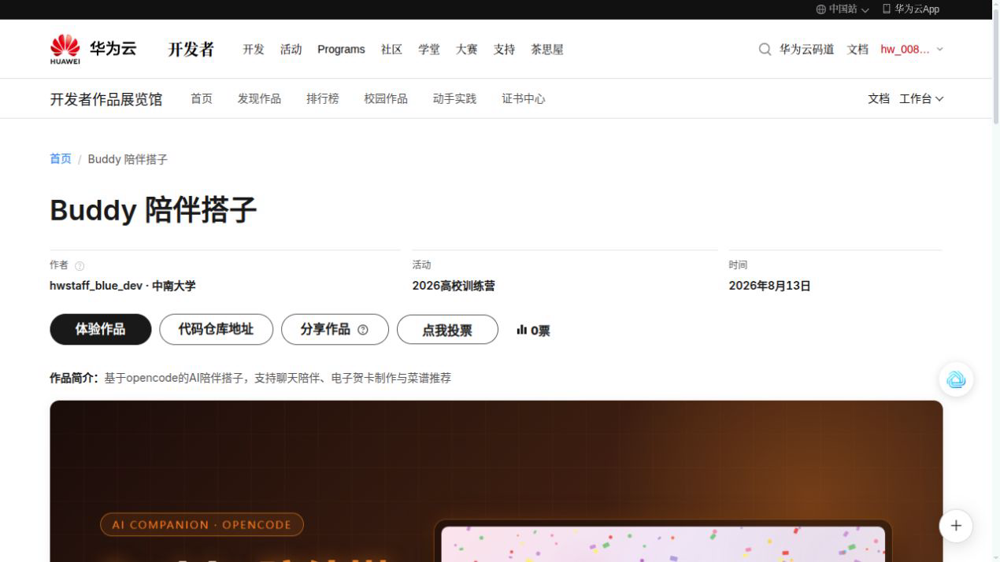
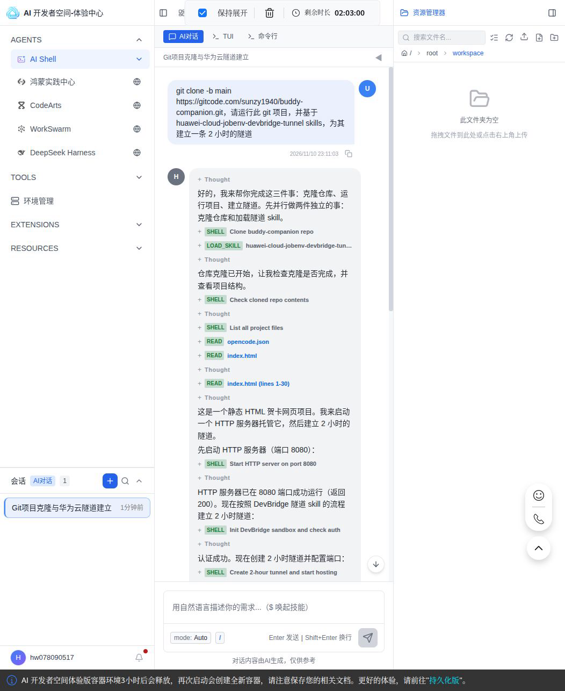
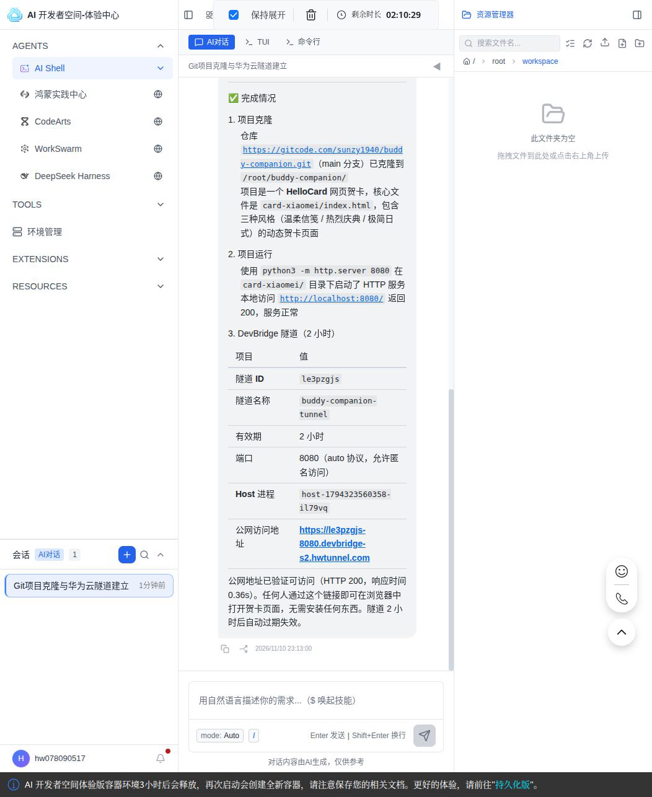
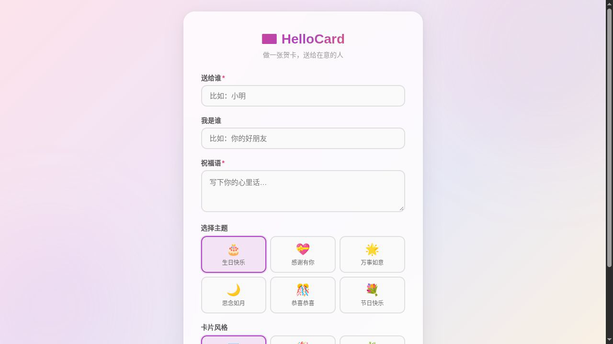

从开发者作品展览馆作品跳转到 AI 开发者空间运行作品
从 Buddy 陪伴搭子的作品页到能填写的 HelloCard 页面，观众只需要点一次「体验作品」。中间的登录、环境创建、克隆、部署和 2 小时公网隧道，都被一条 URL2ENV 深链提前安排好；这篇文章记录的就是这条链路怎么跑通，以及作者侧应该把哪些信息放进链接。
适合人群：作品投稿作者、展览馆运营、需要让观众无门槛体验作品的人 预计时间：5 分钟 前置条件：华为云账号（观众侧）；作品运行配置（作者侧）
一先认识 Buddy 陪伴搭子和「体验作品」
Buddy 陪伴搭子来自 2026 高校训练营，作者是 hwstaff_blue_dev · 中南大学，源码在 GitCode 的
sunzy1940/buddy-companion。这个案例没有铺开全部能力，只选其中的 HelloCard
做验收对象：表单能不能填、页面能不能通过公网打开，一眼就能判断，适合当作展览现场的完整演示。
「体验作品」按钮也不是普通跳转。展览馆在作品接入时保存运行配置，服务端压缩、签名后交给开发者空间。点开链接，AI Shell 按里面的 target 打开，dc
展开成一条可执行提示词，autoSend 又让这条提示词不用等人再敲一遍。
下文先按观众的路径走一遍，再倒回作者侧看这条链接是怎么配置出来的。这样拆开的原因很简单：观众关心页面能不能用，作者关心链接里的提示词、端口和安全边界。

二以前的做法：给一个作品页，剩下观众自己来
没有深链时，一次作品体验会被拆成几件事：找仓库、读 README、判断运行方式，最后还得想办法让页面给别人访问。开发者做这些不难，但在展览或评审现场，每多一步，愿意等的人就少一批。
对作者来说，麻烦也不只出现在第一次投稿。项目结构变了、端口变了、启动命令变了，散落在文档里的说明都要跟着补。作品介绍越完整，运行路径越容易被忽略，断层也就越明显。
三URL 即环境带来的变化：从看作品到跑作品
URL2ENV 做的事情很直接：把运行作品的动作写进链接。展览馆保存的那份 dc 载荷包含提示词和运行参数，服务端签名后交给开发者空间；开发者空间校验签名，再按
target 进入 AI Shell，把提示词交给 Agent 执行。
这条链路里有四层信息：
target=/aishell决定落地界面；dc携带提示词、运行参数和autoSend行为；dc_sign保证载荷没有被中途改写；utm_source=uni-operation记录这次体验来自展览馆投放。
对观众来说，差别不在「多了一个按钮」，而在点开前就已经有了明确的执行顺序：
| 环节 | 没有深链 | 有深链 |
|---|---|---|
| 入口动作 | 复制仓库地址，另开环境 | 点一次「体验作品」 |
| 任务描述 | 自己写克隆、启动和暴露访问的命令 | 提示词已经随链接送进 AI Shell |
| 执行方式 | 观众逐条命令试运行 | Agent 按载荷里的指令执行 |
| 访问结果 | 常常停在 localhost | 得到一条可分享的 DevBridge 隧道地址 |
| 作者维护 | 重复写「如何运行」的说明 | 一份配置随作品页持续复用 |
四开始前要确认的几件事
- 华为云账号：观众侧已注册即可。没登录会先跳华为云登录，登录完回到深链。
- 作品页能看到「体验作品」：gallerytest.developer.huaweicloud.com/gallery/1bc001b1-552e-4731-bb1c-49f6ef8f0440。
- 作品侧已配置运行信息：观众不用手工生成链接；作者侧只要确认仓库可访问、启动方式稳定、端口和提示词一致。
五动手体验：从作品页点一次「体验作品」
这一段按观众看到的顺序走完整链路。整条会话不需要观众重新描述任务，只需要在浏览器和 AI Shell 之间核对结果。
1打开作品页，点「体验作品」
按钮在作品标题下方。点击后新开开发者空间；首次进入会先登录并完成环境初始化，已登录用户则直接落到 AI Shell。
作品页里的标题、简介和「体验作品」按钮都能正常显示。
2确认 AI Shell 里的自动发送行为
AI Shell 打开时，预置提示词已经作为用户消息出现在会话里，不需要再按一次发送。Agent 先拆任务：克隆仓库、加载 DevBridge 隧道 skill、检查项目结构。

会话标题和预置提示词可见，Agent 输出执行计划。
3看 Agent 完成克隆、运行和隧道创建
Agent 识别出这是一个静态 HTML 贺卡页面后，用 python3 -m http.server 8080 起服务，再通过 DevBridge 建 2
小时隧道。最后把本地访问结果、隧道有效期和公网 URL 一起列出来。

拿到 Agent 验证过的公网访问地址，并看到 HTTP 200 结果。
4打开隧道地址，验证作品真正可体验
在另一个浏览器会话打开返回的隧道 URL。首次访问这类域名可能先出现安全提示，确认后进入作品页。这里最终加载出 HelloCard 表单，收件人、祝福语、主题和卡片风格都能直接填。

作品页面在公网 URL 上加载成功，表单可交互。
六给投稿作者：这条链接是怎么创建的
展览馆不是让作者在「链接生成」界面手工填表。作品接入时保存配置，服务端转换成 dc 载荷并附签名。作者真正要把控的是最小可体验动作：哪个仓库、什么分支、怎么启动、怎么暴露给浏览器。
Buddy 这条深链对应的载荷结构如下：
{
"name": "体验作品",
"customizations": {
"aidevspace": {
"launch": [{
"port": 5173,
"aishell": {
"prompt": "git clone -b main https://gitcode.com/sunzy1940/buddy-companion.git，请运行此 git 项目，并基于 huawei-cloud-jobenv-devbridge-tunnel skills，为其建立一条 2 小时的隧道",
"autoSend": true,
"cwd": "/root",
"mode": "auto",
"reasoning": "high",
"model": "hwdevspace/glm-5.2"
}
}],
"steps": [{}]
}
}
}这条配置里值得反复检查的是下面几个字段：
| 字段 | 在本案例中的作用 |
|---|---|
prompt |
写清仓库、分支、运行要求和隧道交付物，是整个体验的启动脚本。 |
autoSend |
设为 true 后提示词直接发送，适合仓库公开、动作无破坏性的展览作品。 |
cwd |
指定 Agent 的工作目录，避免克隆位置漂移。 |
mode / reasoning |
本例用 auto / high，让 Agent 先判断项目类型，再执行部署。 |
model |
显式指定 hwdevspace/glm-5.2，减少不同环境默认模型造成的表现差异。 |
port |
给运行入口留出端口约定。本例最终由 Agent 读项目后选择 8080。 |
转换后的链接形态可以简化成：
https://devstation.developer.huaweicloud.com/aidevspace?target=/aishell&utm_source=uni-operation&dc=<压缩载荷>&dc_sign=<签名>端口固定时，提示词和 port 要写同一个值。比如静态页面直接写「使用 python3 -m http.server 8080 启动」，比让每个会话重新推断端口更稳。
对外发布前，我建议至少验收三种状态：
- 已登录状态下点按钮，能直接进入 AI Shell 并自动执行。
- 退出登录后点按钮，登录完成能回到同一条深链。
- Agent 输出的隧道 URL 能在另一个浏览器会话打开作品页。
七用之前要知道的几件事
- 环境是临时的：体验版容器环境有剩余时长，到点释放。作品页面本身可以重新点链接再创建，但用户在环境里产生的数据要提前保存。
- 隧道只有 2 小时：Agent 创建的 DevBridge 隧道用于现场体验。过期后，重新从作品页进入，Agent 会生成新的隧道地址。
- 链接有效，不等于环境一直在：URL2ENV 链接每次都会拉起新的体验现场，这正是它适合展览和评审的原因。
autoSend要慎用：它代表用户落地后立即执行。只对公开仓库、无密钥、无删除或付费动作的演示链路开启。- 载荷里不要放敏感信息：
dc能被浏览器地址栏携带，作者侧只放仓库地址、启动动作和参数，不放 AK/SK、token 或私有数据。 - 长链接别手工截断：缺
dc或dc_sign都会影响落地。展览场景应复用作品页按钮，而不是复制粘贴一长串文本。
八常见问题
| 现象 | 原因 | 处理 |
|---|---|---|
| 点按钮没反应 | 浏览器拦截了新窗口 | 允许站点弹窗后重试，或直接从作品页再次点击 |
| 落在通用工作台 | 作品配置未生效，或用的是普通跳转链接 | 检查作品接入配置，确认有 target=/aishell 和 dc |
| 提示词没有自动发送 | autoSend 不是 true，或链接被截断 |
重新保存配置，检查 dc 和 dc_sign |
| Agent 卡在依赖或启动 | 仓库结构变化，或启动命令不稳定 | 更新作品配置里的最小运行路径，必要时重进链接拿新环境 |
| 隧道地址打不开 | 本地服务未启动，或 2 小时隧道过期 | 回 AI Shell 看服务状态；过期后重新点击「体验作品」 |
| 模型或推理参数不可用 | 载荷指定了当前环境不支持的组合 | 更新 model、mode、reasoning 后重新生成链接 |